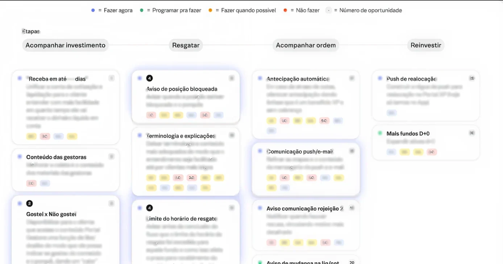
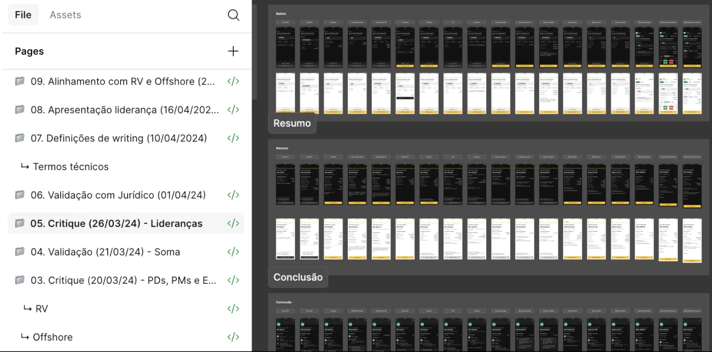
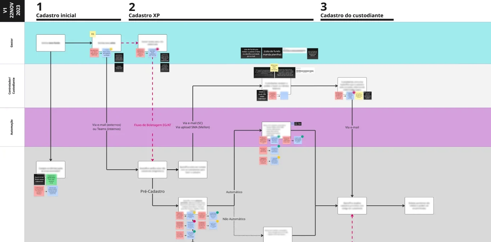

01 · Service & Concept Design Cash-out experience A new mobile cash-out experience built around the pain points behind 40% of fund-related contacts In progressXP Inc · 2025Service & Product Design
Cases
Here are some of the projects I’ve worked on.
+10 years of experience projecting solutions in cross-functional environments
Featured work
01 / 00
-
-

02 · Product Design Transaction flows Four mobile templates that standardised investment negotiation across five business units DeliveredXP Inc · 2025 -

03 · Service Design Back-office efficiency Operational workflows of fund administration mapped into a solution map that cut SLA times DeliveredXP Inc · 2023 -
 04 · Product Discovery
Member get member
A referral programme discovery that ended in a documented no-go — and saved the build
DeprioritizedVivo · 2021
04 · Product Discovery
Member get member
A referral programme discovery that ended in a documented no-go — and saved the build
DeprioritizedVivo · 2021
Inside the design team
01 / 00
The corporate environment taught me to operate at a fast pace, designing both service and product solutions while delivering high-quality digital experiences. Each day, I continue to deepen my understanding of the complexities of leading teams, balancing client needs, business goals, and the challenges of ongoing development. In addition, working in the financial market has provided a valuable opportunity to expand my knowledge of its business models and operational structures, particularly in the areas of fund management, custody, administration, and distribution.
-
Managing
Service design program
Design Team · 2025
Service design was a knowledge gap within the design team. We brought together a group of internal specialists to build the company’s service design training program.
In addition to enabling over 90 designers in service techniques and engaging more than 150 participants, the activities helped map +200 opportunities to enhance the customer experience across 14 different journeys.
-
Managing
Roles and responsibilities
Design Team · 2024
I led a series of co-creation sessions to define the roles and responsibilities of each position within the design team and developed a scoring model that helped monitor both individual skill gaps and team potential.
-
Designing
File and reporting solution
Product Design · 2022
Report and file management was the main pain point in the experience of fund investment managers: usability issues in the legacy platform were compounded by the continued reliance on manual file sharing via email.
I designed a solution that unified the file-sharing experience and enabled the configuration of automated routines tailored to each user’s specific needs, boosting user satisfaction and reducing operational overload.
Consulting projects
01 / 00
As a consultant, I had the opportunity to work on projects with a wide range of scopes and to experience the multitude of ways design can deliver value to both clients and businesses, regardless of the industry. Over the years, I became known for my ability to quickly absorb information, identify patterns, and make sharp diagnoses that consistently contributed to the quality of our deliveries.
-
UX / UI & Design OPS
Telecommunications
Vivo ↗ · 2021
As a newly promoted service design specialist, I coordinated design frameworks, processes, and best practices to be adopted across all squad teams.
In addition, I led the discovery process for new products, guiding designers through cross-team initiatives and supporting other squads in conducting discovery for their ongoing products.
-
UX Research
Big techs
Google & Facebook ↗ · 2020
I was responsible for conducting interviews with users across several ongoing projects, covering topics such as cloud file organization, services within instant messaging platforms, and usability testing of new features.
-
Product Design
Finance
Whitelabel ↗ · 2020
We created a white-label platform that allowed financial institutions to deliver their services end-to-end.
The product supported key experiences including auto financing, loan simulations, credit card control, investment recommendations, and performance insights.
-
Data Viz
Logistics
AB InBev ↗ · 2020
We mapped key variables in the logistics process and translated them into a Power BI solution that enabled the operations team to effectively execute and monitor their services.
I was responsible for conducting the research and translating insights into a clear and structured rationale and wireframe that made the information easy for operational teams to understand and act on. Later, in collaboration with the visual designer, we delivered the final layout, fully aligned with the client’s brand identity.
-
Service Strategy & Concept Design
Agribusiness
Nutrien ↗ · 2020
Amid the challenges of the COVID-19 pandemic, our goal was to identify the service model best suited to meeting the needs of rural producers at scale.
In addition to ensuring the perceived value of the service, our team was also responsible for evolving a marketplace solution focused on core agricultural products such as fertilizers, pesticides, and seeds.
-
Service Strategy & Concept Design
Loyalty
Dotz ↗ · 2020
Our client wanted to understand what drives loyalty among medium and large supermarket chains in order to offer the most suitable service.
As a service designer, I was responsible for organizing and conducting the interviews, as well as consolidating insights and shaping the service strategy. I also took part in developing a series of concepts to elevate the customer experience.
-
Content & UI
Pro bono
GOYN ↗ · 2020
We translated an in-depth report on “Jovens Potência” into a website that presented the study and the program’s proposal, making it easier for young people to access key opportunities coordinated by United Way Brasil.
The initiative aims to impact over 700,000 youths by 2030.
-
Employee Experience & MBA
Consulting
Braskem & EY ↗ · 2019
I was first introduced to design while working on the Braskem project, where we applied design thinking to map pain points and opportunities across the employee journey.
In parallel, everything I learned fed into my MBA case study, which I developed at EY: the project focused on improving the trainee experience to boost employee satisfaction and delivery quality. I was eventually assigned to officially lead and implement the initiative within the company, a role I held for over a year.
Later, I presented the project to Accenture/Fjord, where, as a result, I was hired as a designer.
Where it started
I began my career in the public sector as an intern at the United Nations (UNAIDS) in Brasília. Later on, I became more directly involved with public management, serving as Secretary of Culture and Tourism in the executive administration of my hometown. It was a great starting point, as it gave me the opportunity to closely navigate multiple areas of the public sector, working with social, regional, state, and international organizations.
-
Public partnership
Independent festival
FICA ↗ · 2015
I had the opportunity to serve as the municipal representative leading the partnership between the city and the festival’s organizers and artists.
My role covered budget planning, venue reservation, equipment logistics, media coordination, and on-the-ground execution.
The festival featured cultural interventions, including live music, poetry, and a graffiti mural on the wall of a public school.